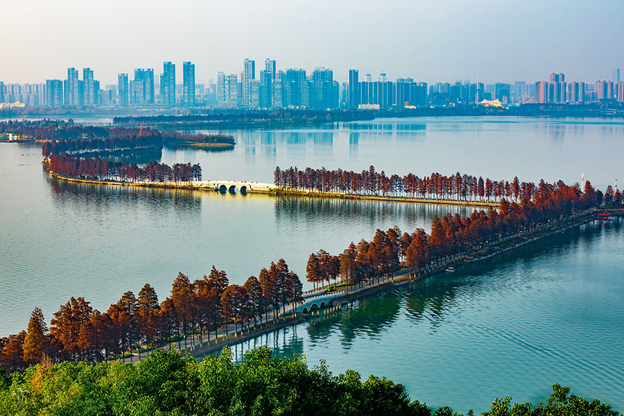
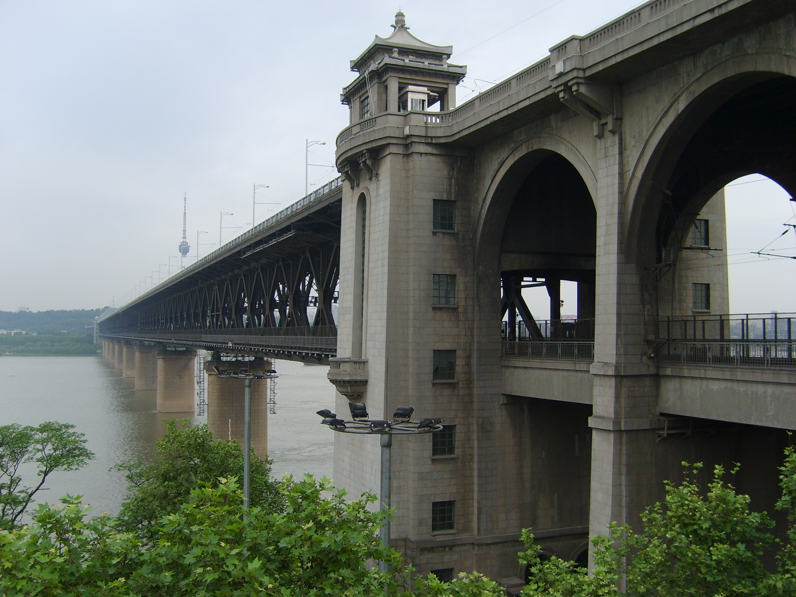
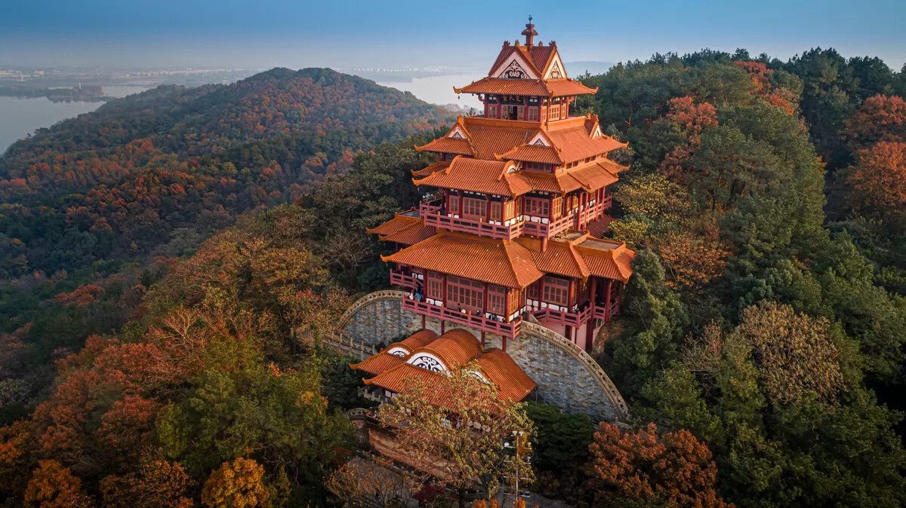

East Lake, one of China’s largest urban lakes, covers 88 square kilometers—6 times the size of West Lake in Hangzhou. It’s a green oasis in the heart of Wuhan, surrounded by hills, forests, and gardens. The lake is divided into six scenic areas, each with its own charm: Moshan Hill (known for cherry blossoms), Tingtao Scenic Area (with willow-lined paths), and Luoyan Scenic Area (famous for autumn maple leaves).Boating is the best way to experience East Lake—you can rent a traditional wooden boat (rowed by a guide, 120 CNY/hour for 2–4 people) or an electric boat (self-driven, 80 CNY/hour for 4 people). In spring, the lake’s shores are covered in cherry blossoms; in autumn, maple trees turn red and gold. The lake is also home to the East Lake Cherry Blossom Garden—with over 5,000 cherry trees, it’s one of China’s top spots for cherry blossom viewing.
Spring (March–April): Cherry blossoms bloom, 10°C–20°C.
Autumn (October–November): Maple leaves turn red, 15°C–25°C.
Entry Fee:Free entry (most areas); East Lake Cherry Blossom Garden: 30 CNY/adult (during blossom season).
Boat Rental: Wooden boat (120 CNY/hour); electric boat (80 CNY/hour).
Moshan Hill: 60 CNY/adult (includes cable car ride to the viewing platform).

The Yangtze River Bridge, China’s first major bridge over the Yangtze River, is an engineering marvel that connects Wuchang and Hanyang districts. Completed in 1957, it’s 1,670 meters long and has two levels: the upper level for cars and pedestrians, and the lower level for trains. Walking across the bridge is a quintessential Wuhan experience—you’ll feel the breeze from the Yangtze, watch ferries pass below, and see Wuhan’s skyline unfold on both sides.At night, the bridge is lit up with golden lights— it looks like a glowing ribbon over the river. The best spots to view the bridge are the "Bridge Observation Deck" (on Snake Hill, near the Yellow Crane Tower) and the "Yangtze River Beach" (a riverside park in Hankou District). You can also take a Yangtze River cruise (80–150 CNY/person) to see the bridge from the water—most cruises include dinner and live music.
Autumn (September–November): Mild weather, clear skies, and beautiful sunsets.
Night (7 PM–9 PM): Bridge lights are on, and the river reflects the city’s glow.
Entry Fee:Free.
Yangtze River Cruise: 80 CNY/person (standard), 150 CNY/person (VIP with dinner).
Bridge Observation Deck: Free (included in Yellow Crane Tower ticket).

Moshan Hill, located on the western shore of East Lake, is a 97-meter-tall hill covered in pine forests, bamboo groves, and cherry blossom trees. It’s named after Qu Yuan, a famous ancient Chinese poet who is said to have wandered the hill’s slopes. The hill is a popular spot for hiking, picnicking, and enjoying panoramic views of East Lake.Key spots on Moshan Hill include the "Qu Yuan Memorial Hall" (dedicated to the poet, with exhibits of his works and life), the "Cherry Blossom Avenue" (lined with over 1,000 cherry trees), and the "Moshan Cable Car" (a 10-minute ride to the hill’s summit, with views of East Lake). In spring, the cherry trees bloom, turning the hill pink; in summer, the pine forests provide shade, making it a cool escape from the city’s heat.
Spring (March–April): Cherry blossoms bloom, 10°C–20°C.
Summer (July–August): Cool in the pine forests, 25°C–30°C (visit in the morning).
Entry Fee:60 CNY/adult (includes cable car round-trip).
Qu Yuan Memorial Hall: Free (included in hill entry fee).